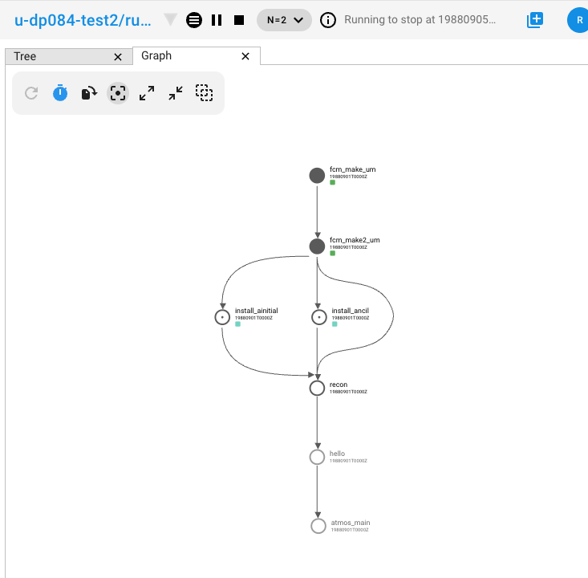

8. Rose/Cylc Exercises
8.1. Differencing suites
Currently there is no Rose tool to difference two suites. Since a suite consists of text files it is simply a matter of making sure all the Rose configuration files are in the common format by running rose config-dump on each suite and then running diff.
We will difference your copy of the GA9.0 suite with the original one:
puma2$ cd ~/roses
puma2$ rosie checkout u-dp084
puma2$ rose config-dump -C u-dp084
puma2$ rose config-dump -C <your-suitename>
puma2$ diff -r u-dp084 <your-suitename>
Question
Are the differences what you expected?
8.2. Graphing a suite
When developing suites, it can be useful to check what the run graph looks like after jinja evaluation, etc.
we shall graph the coupled suite. To do this without running the suite:
puma2$ rosie checkout u-dw272
puma2$ cd ~/roses/u-dw272
puma2$ cylc graph u-dw272
A window containing the graph of the suite should appear.
You an also view the graph of a running workflow in the Cylc GUI by selecting ADD VIEW –> Graph
8.3. Exploring the suite definition files
Change to the ~/roses/<suite-id> directory for your copy of u-dp063.
Open the flow.cylc file in your favourite editor.
Look at the [scheduling] section. This contains some Jinja2 variables (BUILD & RECON) which allow the user to select which tasks appear in the dependency graph. The dependency graph tells Cylc the order in which to run tasks. The fcm_make and recon tasks are only included if the BUILD and RECON variables are set to true. These variables are located in the rose-suite.conf and can be changed using the rose edit GUI or by directly editing the rose-suite.conf file. When you run a suite, a processed version of the flow.cylc file, with all the Jinja2 code evaluated, is placed in your workflow’s cylc-run directory.
Question
Take a look at the
flow-processed.cylcfile for your suite.
Hint
Go to directory ~/cylc-run/<workflow-name>/runX/log/config.
Change the values of BUILD and RECON and re-run your suite.
Question
Look at the new
flow-processed.cylcfile. Can you see how the graph has changed?
Make sure that you leave the suite with BUILD=true before continuing.
As we saw earlier when changing the path to the start dump, some settings can’t be changed through the rose edit GUI. Instead you have to edit the suite definition files directly.
Question
Can you find where the atmos processor decomposition is set for this suite?
Change atmos processor decomposition to run on 2 nodes. Run the suite.
Question
Did it work? If not, what error message did you get?
Hint
Look in the usual
job.out/job.error it may be in thejob-activity.logfile.
You will get an error if the processor decomposition of the model does not match the number of tasks and nodes requested by Slurm. For details on the Slurm batch system on ARCHER2 see: https://docs.archer2.ac.uk/user-guide/scheduler/).
In the [[atmos]] [[[directives]]] section, set --nodes=2 and --ntasks=256 to tell the Slurm scheduler that you require 2 nodes and a total of 256 MPI tasks.
Questions
The suite should run this time. Did it run on 2 nodes as requested?
How much walltime has been requested for the reconfiguration?
Now take a look at the flow.cylc file for your other suite (the one copied from u-dp084). See how it differs. This one is set up to run on multiple platforms.
Questions
Can you see the more complex dependency graph?
Why do you not need to adjust the Slurm directives to change the processor decomposition in this suite?
Can you see where to change the reconfiguration walltime for this suite?
Further Information
This has just given you a very brief look at the suite definition files. More information can be found in the cylc documentation: Writing Workflows
8.4. Removing workflows
If we don’t clear up worfklows when we are finished with them disk usage will mount up and you will eventually exceed your quota. As we have seen when running our workflows, files are written to multiple locations; PUMA2, ARCHER2 /home, /work and potentially other locations. The directory setup includes symlinks which means you can’t simple do a rm -r ~/cylc-run/<workflow-name> on ARCHER2 for instance as this is just a symlink to /work. Fortunately, Cylc provides an easy way to clean up a workflow.
Try cleaning up one of your workflows. We suggest the one you ran in Chapter 4; your copy of u-dp063:
puma2$ cylc clean <workflow-name>
You will see output similar to the following:
ros@puma2$ cylc clean u-dw123
Would clean the following workflows:
u-dw123/run2
Remove these workflows (y/n): y
INFO - Cleaning u-dw123/run2 on install target: archer2
INFO - [archer2]
INFO - Removing symlink and its target directory: /home/n02/n02/ros/cylc-run/u-dw123/run2 -> /mnt/lustre/a2fs-work2/work/n02/n02/ros/cylc-run/u-dw123/run2
INFO - Removing directory: /home/n02/n02/ros/cylc-run/u-dw123
INFO - Removing directory: /mnt/lustre/a2fs-work2/work/n02/n02/ros/cylc-run/u-dw123
INFO - Removing directory: /home/n02/n02/ros/cylc-run/u-dw123/run2
INFO - Removing directory: /home/n02/n02/ros/cylc-run/u-dw123/_cylc-install
INFO - Removing directory: /home/n02/n02/ros/cylc-run/u-dw123
See Also
Cylc User Guide: Removing Workflows
8.5. Version Control of Suites
Just like the model code, your UM Rose suites are under version control in a subversion repository called rosie-u which is on MOSRS. Once you have a working copy of your suite under ~/roses you can use FCM commands to check the status of your edits; i.e. local edits, diff changes, commit changes etc.
Go to your suite working directory for one of the suites you’ve used on this course and type
fcm statusto see the changes you have made since you copied the suite.Run
fcm committo commit your changes to the repository. This saves your changes to the repository.Take a look in the MOSRS roses-u Trac (https://code.metoffice.gov.uk/trac/roses-u) and find the suite you created in the previous section.
Hint
Go to Browse Source` then drill down to find your suite. e.g. u-dp084 would be under d/p/0/8/4 and see that your commit has now appeared in the repository.
Use Trac to view the changes you have made to the suite.
Hint
Click on the number in the revision column, and then on the View changes button to show a diff of your changes
8.6. Adding a new app to a suite
A Rose application or “Rose app” is a Rose configuration for running an executable command, encapsulating details such as scripts, programs and settings.
To add a new app to a suite, we first create a directory to hold the app files. The main details are specified in a configuration file rose-app.conf. We may also specify some metadata to tell the general user what inputs to the task mean (this goes under a meta/ sub-directory or we may reference some standard metadata held elsewhere). Any scripts or executables needed by the new app can be added into an app bin/ directory. General scripts that aren’t specific to the app should go in the suite bin/ directory.
Remember to fcm add any new files that you add to the suite so they will be added to the repository when you next commit.
In order to actually run the app, we need to add a new “task” to the suite which involves editing the suite configuration file flow.cylc. We need to specify 3 things:
How the new task relates to other tasks, specifically, which task will trigger it and which task will follow it;
What the task will run (i.e which app); and
How the task will run (i.e. which computer and the resources it will need).
In this example, we will add an app that prints Hello World, which will execute after the reconfiguration and before the main model. We will add the app to your copy of u-dp084.
Create the Rose application directory
Make sure the Rose edit GUI for your suite is closed. cd into the suite app/ directory and create a new directory called new_app
puma2$ cd ~/roses/<SUITEID>/app
puma2$ mkdir new_app
Create the Rose app configuration file
Change into the new_app directory and create a blank app configuration file called rose-app.conf:
puma2$ touch rose-app.conf
Start the Rose editor (remember you need to be in the top level of the suite directory). You should now see the new application listed in the left hand panel. At this point it is an empty application and is not integrated into the task chain. Click on new_app to load the app and then the little triangle to the left of new_app to expand its contents.
Tip
You may need to select View > View Latent Pages to see the little triangle
Everything is greyed out. Click on command to see the command page and then click the + sign next to command default. Again you may need to select View -> View Latent Variables to see it. Select add to configuration to add a command to the application. Enter echo "Hello World" in the command default box. Save this and then have a look at the contents of the rose-app.conf file to see the effect.
Add a new task to the suite definition
In order to execute the app, we need to add a new task to the suite workflow. This task executes our new application on a machine that we specify. In this instance we are adding the new task between the reconfiguration and the model run, and the task will be run on ARCHER2 in the serial queue.
To set this up, edit the flow.cylc file. Under,
[scheduling]
[[graph]]
find the line
{% set INIT_GRAPH = INIT_GRAPH ~ ' => atmos_main' if TASK_RUN else INIT_GRAPH %}
and change it to
{% set INIT_GRAPH = INIT_GRAPH ~ ' => hello => atmos_main' if TASK_RUN else INIT_GRAPH %}
This puts the task hello in the right place in the task list.
Do the same for the line:
{% set BUILD_GRAPH = BUILD_GRAPH ~ ' => atmos_main' if TASK_RUN else BUILD_GRAPH %}
The next step is to add a definition for the new task. To tell Rose to use one of the apps contained in the suite, we set the environment variable ROSE_TASK_APP in the task definition. General task definitions go in the flow.cylc file and the definitions specific to ARCHER2 in the site/archer2.cylc file. The queuing system is specific to the host being run on, and there is already a definition for the ARCHER2 serial queue environment [[HPC_SERIAL]] that we can make use of. To run the new application on ARCHER2 in the serial queue and give it two minutes to complete, add the following lines to the flow.cylc after the definition for [[recon]]:
[[hello]]
inherit = HPC_SERIAL
execution time limit = PT2M
[[[environment]]]
ROSE_TASK_APP = new_app
Running the new app
We are now ready to go. Run the suite. Look at the task graph, if you’re using the Cylc GUI you can simply select ADD VIEW –> Graph. You may need to change the graph window depth to see more of the workflow. This can be done by changing N=1 to N=3 at the top of the Cylc GUI. In the graph you should see the new task hello in between recon and atmos_main``the new task ``hello in between.

Notice that atmos_main no longer runs after the reconfiguration, but our new task hello does and when that has completed, atmos_main starts. The output from the hello task can be found in the cylc output directory: log/job/19880901T0000Z/hello/NN/job.out.
Extending the app to run a script
A more complex application might involve the execution of a script. To do this we would replace the contents of the command default box with the name of the script. Then place the script in the app bin/ directory.
Now create a bin/ directory under new_app/ and cd into it. Create a file called hello.sh with the contents,
#!/bin/bash
echo "Hello, $1!"
We will allow the user to select from a variety of planets and say hello. Make it an executable script:
chmod +x hello.sh
Then we can say ./hello.sh Jupiter to get it to print “Hello, Jupiter!”.
Right click on the greyed out new_app –> env in the index panel and click + Add env. Save, then select new_app –> env to view the env page, right click on the blank page and select Add blank variable. Two boxes appear: enter PLANET in the first and Jupiter in the second. This adds an environment variable called PLANET and sets it to Jupiter.
Now change the command from echo "Hello, World" to hello.sh ${PLANET}.
Testing and Running
The app can be tested in isolation by changing into the new_app/ directory and executing,
rose app-run
This should produce output similar to:
ros@puma2$ rose app-run
[INFO] export PATH=/home4/home/n02-puma/ros/roses/u-dp084/app/new_app/bin:/home/ros/bin:/usr/...
[INFO] export PLANET=Jupiter
[INFO] command: hello.sh ${PLANET}
Hello, Jupiter!
and also a file rose-app-run.conf, which can be deleted.
Now Run the suite.
Rose Metadata
Metadata can be used to provide information about settings in Rose configurations. It is used for documenting settings, performing automatic checking and for formatting the rose edit GUI. Metadata can be used to ensure that configurations are valid before they are run.
Metadata for many standard applications, such as um-atmos, fcm_make are all stored centrally on PUMA2 in ~fcm/rose-meta. Have a look at this directory.
For our example there are currently no restrictions on the variable PLANET. We will now add some metadata to help the user understand what the variable PLANET is and what values it is limited to.
Rose provides some tools to quickly guess at the metadata where there is none. Create a directory meta/ under new_app/ . Then execute the command,
rose metadata-gen
This creates a file rose-meta.conf in the meta/ directory. It just says that there is an evironment variable called PLANET, but it does not know much about it. Edit this file and add the following lines after [env=PLANET]:
description=The name of the planet to say hello to.
values=Mercury, Venus, Earth, Mars, Jupiter, Saturn, Uranus, Neptune
help=Must be a planet bigger than Pluto - see https://en.wikipedia.org/wiki/Solar_System
Now go back to the Rose GUI and select Metadata > Refresh Metadata. Once the metadata has reloaded, go to the new_app –> env panel. The entry box for PLANET has changed into a drop down list. Pluto is not allowed, presumably because the code cannot handle tiny planets. Right click on the cog next to Planet and select info to see the description and allowed values.
Further Information
A fuller discussion of Rose metadata can be found at https://metomi.github.io/rose/doc/html/tutorial/rose/metadata.html.
Designing a new application may seem a daunting process, but there are numerous existing examples in suites that you can try to understand. For further details, see the Rose documentation at https://metomi.github.io/rose/doc/html/tutorial/rose/applications.html. There are a collection of built-in applications that you can use for building, testing, archiving and housekeeping - see https://metomi.github.io/rose/doc/html/api/rose-built-in-applications.html.